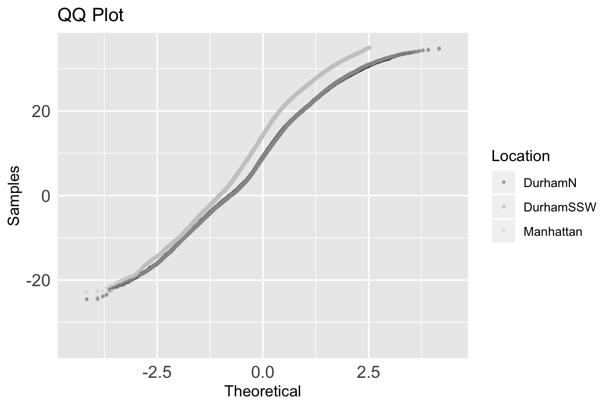
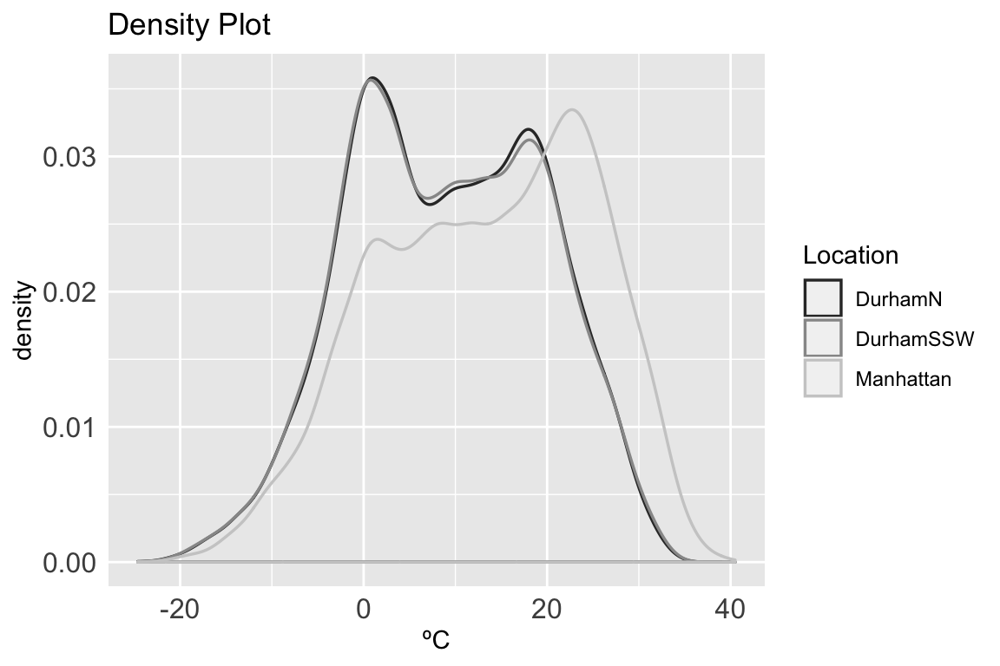
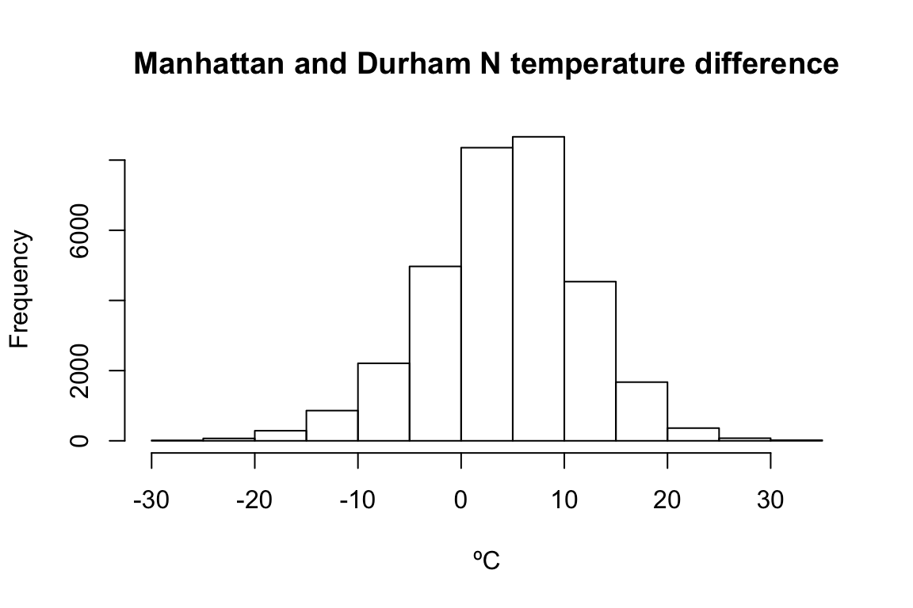
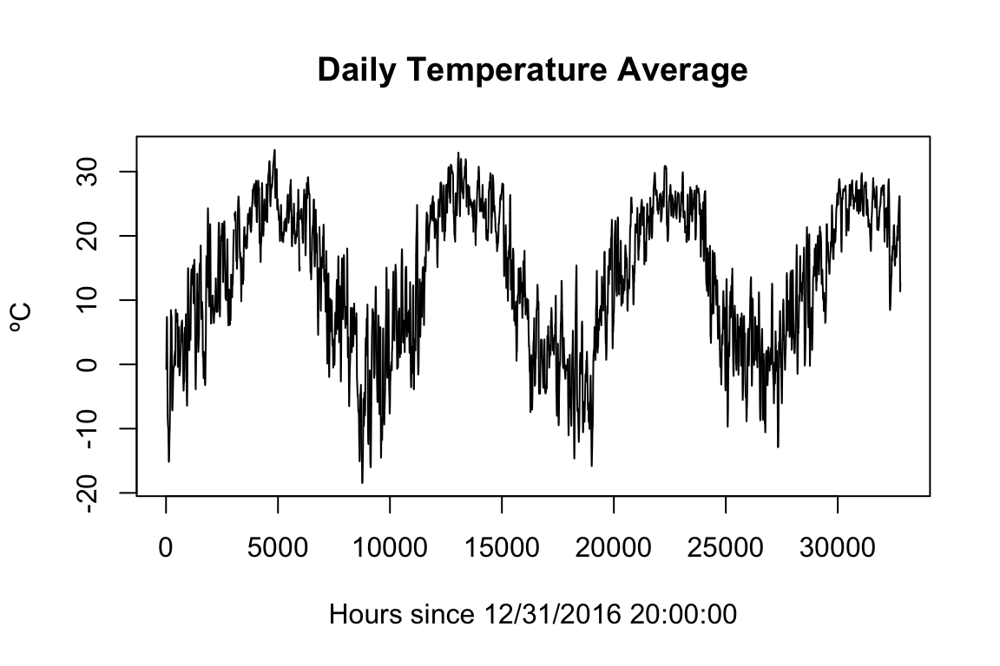
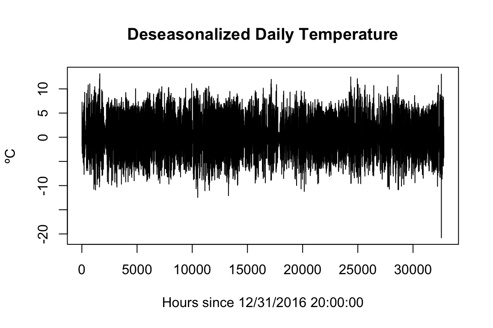
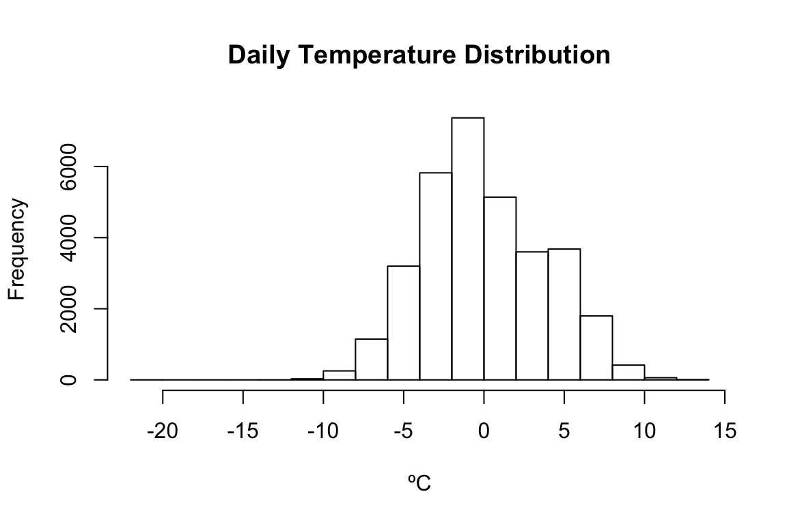
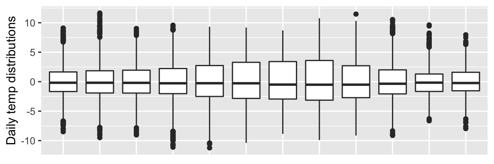
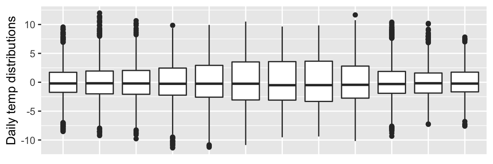
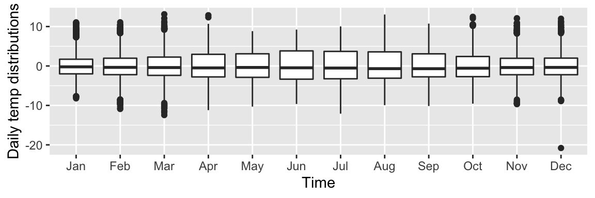

This document shows a brief temperature time series analysis using three NOAA quality control datasets. This analysis functions as proof and practice for concepts that will be employed on more complex temperature time-series data. While researching analytical techniques and working through issues during analysis it became apparent that time-series temperature data requires special consideration in a few key aspects. Namely, distribution and seasonality. The discovery and treatment for those aspects is presented below.
Weather station data were downloaded from https://www.ncdc.noaa.gov/crn/qcdatasets.html
Three weather stations were picked for this analysis, two of which are in the same town while the third is in a different state. The assumption is that the two nearby stations will record similar temperature patterns while the distant station will record a significantly different temperature pattern.
Durham, North Carolina weather station data from the two stations labeled ‘N’ and ‘SSW’ were chosen for the years 2017 to 2020. Data from the distant station in Manhattan, Kansas were gathered for the same years. The columns containing date, local time, and temperature were selected for each location.
The main statistical tool will be pairwise correlation between weather stations. There are some assumptions that will be checked first to determine the proper correlation method to use. Following the correlation test the data will be deseasonalized and explored to help inform future directions of analysis.
library(readr); library(magrittr); library(plotly);
library(chron); library(dplyr); library(tidyr);
library(tibble)
The data were parsed as follows, for all years listed.
colNames <- readr::read_delim("/path/to/ColNames.txt", delim = " ", col_names = FALSE) %>% unlist()
durhamN2017 <- readr::read_delim( "/path/to/CRNH0203-2017-NH_Durham_2_N.txt",
delim = " ", col_names = durhamColNames) %>% dplyr::select(LST_DATE, LST_TIME, T_CALC)
durhamSSW2017 <- readr::read_delim( "/path/to/CRNH0203-2017-NH_Durham_2_SSW.txt",
delim = " ", col_names = durhamColNames) %>% dplyr::select(LST_DATE, LST_TIME, T_CALC)
manhattan2017 <- readr::read_delim( "/path/to/CRNH0203-2017-KS_Manhattan_6_SSW.txt",
delim = " ", col_names = durhamColNames) %>% dplyr::select(LST_DATE, LST_TIME, T_CALC)
The loaded data were combined and cleaned. The code chunk below shows all steps taken, with limited explanations for each step. Check out “Cleaning Data” to find some useful cleaning, visualizing and generating steps on a particularly messy(realistic) dataset.
durhamN <- rbind(durhamN2017,durhamN2018, durhamN2019, durhamN2020)
durhamSSW <- rbind(durhamSSW2017, durhamSSW2018, durhamSSW2019, durhamSSW2020)
manhattan <- rbind(manhattan2017, manhattan2018, manhattan2019, manhattan2020)
durhamN$T_CALC %<>% as.numeric()
durhamSSW$T_CALC %<>% as.numeric()
manhattan$T_CALC %<>% as.numeric()
# find the number that is used as NA value
durhamSSW$T_CALC %>% unique() %>% sort()
durhamN$T_CALC[durhamN$T_CALC == -9999] <- NA
durhamSSW$T_CALC[durhamSSW$T_CALC == -9999] <- NA
manhattan$T_CALC[manhattan$T_CALC == -9999] <- NA
# Convert dates and times to chron format
durhamSSW$LST_DATE <- as.dates(as.character(durhamSSW$LST_DATE), format = "ymd")
durhamN$LST_DATE <- as.dates(as.character(durhamN$LST_DATE), format = "ymd")
manhattan$LST_DATE <- as.dates(as.character(manhattan$LST_DATE), format = "ymd")
durhamSSW$LST_TIME %<>% as.character() %>% strtrim(2) %>% paste0(":","00:00") %>% as.times()
durhamN$LST_TIME %<>% as.character() %>% strtrim(2) %>% paste0(":","00:00") %>% as.times()
manhattan$LST_TIME %<>% as.character() %>% strtrim(2) %>% paste0(":","00:00") %>% as.times()
# Combine durham tables
durhamTemps <- full_join(x = durhamSSW, y = durhamN, by = c("LST_DATE", "LST_TIME"))
allTemps <- full_join(x = durhamTemps, y = manhattan, by = c("LST_DATE", "LST_TIME"))
# last row is weird, take it out
allTemps <- allTemps[-nrow(allTemps),]
colnames(allTemps) <- c("Date", "Time", "DurhamSSW", "DurhamN", "Manhattan")
#pivot longer for plotting
allTemps <- pivot_longer(allTemps, cols = 3:5, names_to = "Location", values_to = "Temperature")
The data is now cleaned and the analysis workflow can start. First a few plots will be generated to get a sense for the data and to view its seasonality.
#daily
ggplot(allTemps[allTemps$Location == "Manhattan",],
aes(x=Time %>% as.character() %>% substr(0,2), y=Temperature)) +
geom_boxplot() +
theme(axis.title.x=element_blank(), axis.ticks.x=element_blank(), axis.ticks.y=element_blank()) +
ylab("ºC")
#monthly
ggplot(allTemps[allTemps$Location == "Manhattan",],
aes(x=Date %>% chron::dates() %>% months() %>% factor(), y=Temperature)) +
geom_boxplot() +
theme(axis.title.x=element_blank(),axis.ticks.x=element_blank(), axis.ticks.y=element_blank()) +
ylab("ºC")
#yearly
ggplot(allTemps[allTemps$Location == "Manhattan",],
aes(x=Date %>% years() %>% factor(), y=Temperature)) + xlab("Time") +
geom_boxplot() + theme(axis.ticks.x=element_blank(), axis.ticks.y=element_blank()) +
ylab("ºC")Figure 1: Figure: Temperature quartiles displayed over the intervals: 24 hours, 12 months, 5 years.
Interestingly, there are a few data points from 2016 in this set. Also, it is apparent that there is a yearly and daily seasonal trend, and no obvious trend over the years. The seasonality should not affect correlation, so that will not be explored until later.
Some quick statistics can roughly compare the temperature datasets to each other. Tukey’s Five Numbers can give a sense of the temperature distribution at each location.
TFNtxt <- "Tukey's Five Numbers "
paste(TFNtxt, "DurhamN",
paste(fivenum(allTemps$Temperature[allTemps$Location == "DurhamN"]),collapse=" "))
paste(TFNtxt, "DurhamSSW",
paste(fivenum(allTemps$Temperature[allTemps$Location == "DurhamSSW"]),collapse=" "))
paste(TFNtxt, "Manhattan",
paste(fivenum(allTemps$Temperature[allTemps$Location == "Manhattan"]),collapse=" "))## [1] "Tukey's Five Numbers DurhamN -24.5 0.8 9.1 17.8 34.7"
## [1] "Tukey's Five Numbers DurhamSSW -24.6 0.7 9 17.7 34.9"
## [1] "Tukey's Five Numbers Manhattan -22.8 4.1 14.3 22.9 40.5"All stations have similar high/low values, but there is a noticeable difference in the quartiles for the Manhattan station. The two Durham stations on the other hand are highly similar.
Correlation lends its self well for comparing time-series temperature data. The Pearson correlation would be the first choice since it is not only the most widely used, but it is also faster, O(n), than the rank based methods that sort data, O(nlogn), before correlating it.
To run a Pearson correlation with a clean conscience the data must be checked for normality. A visual check for normality can be done with a QQ plot and a density plot.
# QQ plot of all temp sets
ggplot(allTemps, aes(sample=Temperature)) +
geom_qq_line() +
geom_qq(aes(colour=Location),alpha=0.3,size=0.6) + ylim(-35, 35) + scale_colour_grey() +
theme(axis.text=element_text(size=12),
axis.ticks.x=element_blank(),
axis.ticks.y=element_blank()) +
xlab("Theoretical") + ylab("Samples") + ggtitle("QQ Plot")
# density plot of all temp sets
ggplot(allTemps, aes(x=Temperature)) +
geom_density(aes(color=Location), size=0.6) + scale_colour_grey() +
theme(axis.text=element_text(size=12),
axis.ticks.x=element_blank(),
axis.ticks.y=element_blank()) +
xlab("ºC") + ggtitle("Density Plot")
The QQ plot does not look perfectly normal for each location, also the density plot shows multiple peaks. A Shapiro-Wilk test can provide a more thorough follow-up.
#shaprio.test() can only take up to 5000 values; there are 32806 values per location
randsampleDurhamN <- filter(allTemps,
Location == "DurhamN")[sample(1:32806, 5000, replace=FALSE),]
randsampleDurhamSSW <- filter(allTemps,
Location == "DurhamSSW")[sample(1:32806, 5000, replace=FALSE),]
randsampleManhattan <- filter(allTemps,
Location == "Manhattan")[sample(1:32806, 5000, replace=FALSE),]
swTestDurhamN <- randsampleDurhamN %>%
dplyr::select(Temperature) %>% unlist() %>% shapiro.test()
swTestDurhamSSW <- randsampleDurhamSSW %>%
dplyr::select(Temperature) %>% unlist() %>% shapiro.test()
swTestManhattan <- randsampleManhattan %>%
dplyr::select(Temperature) %>% unlist() %>% shapiro.test()
paste("DurhamN -- W-stat:",
round(swTestDurhamN$statistic,4),
" p-value:" ,
swTestDurhamN$p.value)
paste("DurhamSSW -- W-stat:",
round(swTestDurhamSSW$statistic,4),
" p-value:" ,
swTestDurhamSSW$p.value)
paste("Manhattan -- W-stat:",
round(swTestManhattan$statistic,4),
" p-value:" ,
swTestManhattan$p.value)## [1] "DurhamN -- W-stat: 0.9871 p-value: 9.66354939096328e-21"
## [1] "DurhamSSW -- W-stat: 0.9868 p-value: 3.48098589570404e-21"
## [1] "Manhattan -- W-stat: 0.9787 p-value: 9.72604246249421e-27"For all three temperature datasets the Shapiro-Wilk null hypothesis is rejected, so none of the datasets are normally distributed. A Pearson correlation, therefore, can not be used for comparison. A non-parametric correlation test can be used instead of the Pearson correlation.
In this case a Kendall’s Tau correlation will be used.
ktCorDurhamNDurhamSSW <- cor.test(allTemps$Temperature[allTemps$Location == "DurhamN"],
allTemps$Temperature[allTemps$Location == "DurhamSSW"],
use = "pairwise.complete.obs", method = "kendall")
ktCorDurhamNManhattan <- cor.test(allTemps$Temperature[allTemps$Location == "DurhamN"],
allTemps$Temperature[allTemps$Location == "Manhattan"],
use = "pairwise.complete.obs", method = "kendall")
ktCorDurhamSSWManhattan <- cor.test(allTemps$Temperature[allTemps$Location == "DurhamSSW"],
allTemps$Temperature[allTemps$Location == "Manhattan"],
use = "pairwise.complete.obs", method = "kendall")
prntTxt <- c(" -- kt-cor:"," z-stat:"," p-val:")
paste("DurhamN & DurhamSSW",prntTxt[1], round(ktCorDurhamNDurhamSSW$estimate,4), prntTxt[2],
round(ktCorDurhamNDurhamSSW$statistic,4), prntTxt[3], ktCorDurhamNDurhamSSW$p.value)
paste("DurhamN & Manhattan",prntTxt[1], round(ktCorDurhamNManhattan$estimate,4), prntTxt[2],
round(ktCorDurhamNManhattan$statistic,4), prntTxt[3], ktCorDurhamNManhattan$p.value)
paste("DurhamSSW & Manhattan",prntTxt[1], round(ktCorDurhamSSWManhattan$estimate,4), prntTxt[2],
round(ktCorDurhamSSWManhattan$statistic,4), prntTxt[3], ktCorDurhamSSWManhattan$p.value)## [1] "DurhamN & DurhamSSW -- kt-cor: 0.9682 z-stat: 259.4059 p-val: 0"
## [1] "DurhamN & Manhattan -- kt-cor: 0.5916 z-stat: 158.5514 p-val: 0"
## [1] "DurhamSSW & Manhattan -- kt-cor: 0.5854 z-stat: 157.9489 p-val: 0"The two Durham stations have a strong correlation to each other (0.9682) while the correlations between the Manhattan station and the two Durham stations is moderate, around 0.5885
The QQ and density plots as well as the Kendall’s Tau test indicate that the Manhattan dataset has a different distribution than the Durham sets. A simple way to compare two sets with different distributions is to plot their difference.
manhattanDurhamNDifference <- allTemps$Temperature[allTemps$Location == "Manhattan"] -
allTemps$Temperature[allTemps$Location == "DurhamN"]
hist(manhattanDurhamNDifference, xlab = "ºC", main="Manhattan and Durham N temperature difference")
fivenum(manhattanDurhamNDifference)## [1] -26.2 -0.3 4.6 9.1 32.2The average temperature from 2017 to 2020 in Manhattan, Kansas is about 4.6 degrees higher than Durham, North Carolina ‘N’. It is interesting to note that about 50% of the temperature variation is only ±5ºC around the mean, however the range of outliers is a massive ±30ºC.
It is possible to further explore the variation in temperature at each location by removing seasonality.
The yearly and daily seasonal effects are apparent when viewing this data in the first few plots. It is possible to view only the daily temperature distribution around the mean for that day. This is done by removing daily seasonality from the data.
First, daily seasonality is removed using a moving average filter. This leaves the yearly seasonality and the residuals.
dayTrendManhattan <- stats::filter(allTemps$Temperature[allTemps$Location == "Manhattan"],
filter=c(1/2, rep(1, times=23), 1/2)/24,
method="convo",
sides=2)
#daily seasonality removed
plot(dayTrendManhattan, xlab="Hours since 12/31/2016 20:00:00", ylab="ºC", main="Daily Temperature Average")
Now it is a simple task to remove the daily seasonal trend by simply subtracting it out of the original time-series. Once that is done a few plots and statistics can dig into the daily temperature distribution.
daySeasonEffManhattan <- allTemps$Temperature[allTemps$Location == "Manhattan"] - dayTrendManhattan
plot(daySeasonEffManhattan, xlab="Hours since 12/31/2016 20:00:00", ylab="ºC", main="Deseasonalized Daily Temperature")
hist(daySeasonEffManhattan, xlab="ºC", main="Daily Temperature Distribution")
#There is only one outlier below -13 from the daily mean
paste("Outliers below -12ºC: ",
paste(round(daySeasonEffManhattan[daySeasonEffManhattan < -12 & !is.na(daySeasonEffManhattan)],2),
collapse=" "))
paste(TFNtxt, paste(fivenum(daySeasonEffManhattan) %>% round(4), collapse=" "))## [1] "Outliers below -12ºC: -12.45 -12.09 -20.8"
## [1] "Tukey's Five Numbers -20.8 -2.6875 -0.4396 2.7479 13.1229"The three locations can be deseasonalized and roughly compared using Tukey’s Five Numbers.
daySeasonEffDurhamN <- allTemps$Temperature[allTemps$Location == "DurhamN"] -
stats::filter(allTemps$Temperature[allTemps$Location == "DurhamN"],
filter=c(1/2, rep(1, times=23), 1/2)/24, method="convo", sides=2)
daySeasonEffDurhamSSW <- allTemps$Temperature[allTemps$Location == "DurhamSSW"] -
stats::filter(allTemps$Temperature[allTemps$Location == "DurhamSSW"],
filter=c(1/2, rep(1, times=23), 1/2)/24, method="convo", sides=2)
paste(TFNtxt,"DurhamN",paste(fivenum(daySeasonEffDurhamN) %>% round(4),collapse=" "))
paste(TFNtxt,"DurhamSSW",paste(fivenum(daySeasonEffDurhamSSW) %>% round(4),collapse=" "))
paste(TFNtxt,"Manhattan",paste(fivenum(daySeasonEffManhattan) %>% round(4),collapse=" "))## [1] "Tukey's Five Numbers DurhamN -11.2375 -2.2458 -0.2812 2.2979 11.6583"
## [1] "Tukey's Five Numbers DurhamSSW -11.3646 -2.3354 -0.2729 2.4354 11.9917"
## [1] "Tukey's Five Numbers Manhattan -20.8 -2.6875 -0.4396 2.7479 13.1229"Each location appears to have similar daily temperature distributions, however Manhattan has slightly narrower distributions than Durham. There is also an outlier in the Manhattan set, since this outlier was not present before it may be due to a calculation error when removing seasonality.
Quartiles for the distributions of daily temperatures around the mean can be viewed over the period of a year in the same way that the hourly temperature was viewed at the beginning of this document.
dailyTempDistributionDurhamN <- ggplot(
add_column(allTemps[allTemps$Location == "DurhamN",], dailySeasonalEffect = daySeasonEffDurhamN),
aes(x=Date %>% chron::dates() %>% months() %>% factor(),y=dailySeasonalEffect)) +
geom_boxplot() + theme(axis.title.x=element_blank(),axis.text.x=element_blank(),axis.ticks.x=element_blank()) +
ylab("Daily temp distributions")
dailyTempDistributionDurhamSSW <- ggplot(
add_column(allTemps[allTemps$Location == "DurhamSSW",], dailySeasonalEffect = daySeasonEffDurhamSSW),
aes(x=Date %>% chron::dates() %>% months() %>% factor(),y=dailySeasonalEffect)) +
geom_boxplot() + theme(axis.title.x=element_blank(),axis.text.x=element_blank(),axis.ticks.x=element_blank()) +
ylab("Daily temp distributions")
dailyTempDistributionManhattan <- ggplot(
add_column(allTemps[allTemps$Location == "Manhattan",], dailySeasonalEffect = daySeasonEffManhattan),
aes(x=Date %>% chron::dates() %>% months() %>% factor(),y=dailySeasonalEffect)) +
geom_boxplot() + xlab("Time") + ylab("Daily temp distributions")
dailyTempDistributionDurhamN
dailyTempDistributionDurhamSSW
dailyTempDistributionManhattan
It appears that the distribution of daily temperatures does change over the period of a year. This is useful information to know for any further analysis of temperature time-series datasets. It is also interesting to note that the distribution of Manhattan temperatures is narrower than the Durham distributions for every month.
Through this exploration and analysis a few key takeaways were discovered about the three temperature datasets. Importantly, it was discovered that this temperature data does not follow a normal distribution according to the Shapiro-Wilk test. Taking this into consideration the three datasets were measured for correlation using the Kendall’s Tau method. This correlation test showed that the two Durham weather stations had recorded highly correlated temperature readings, while the Manhattan weather station was only moderately correlated to the two Durham stations. Comparing the difference of the ‘N’ Durham station to the Manhattan station it was learned that Manhattan has a higher average temperature, but narrower distribution, than Durham. Further steps that removed seasonality showed that there is a shift in daily temperature distributions through the year. Namely, a wider distribution around the summer and a narrower distribution around the winter.
This brief analysis can open many doors for further investigation. One of the most important would be determining if this, or any, temperature data can fit a distribution function. Since there are two seasonality components in this data, there could be a combination of distributions at play.
Temperature swings from day to night is an ecologically important stress factor. If this analysis is used for later work to compare biological stress factors at different locations, then a special analysis of temperature ranges and rates of change would be useful.
Like a good R-user, I always Read The Manual first.
–Time-series concepts and analysis:
qq plot and concepts https://rmets.onlinelibrary.wiley.com/doi/full/10.1002/wea.2158
decomposition and much much more https://nwfsc-timeseries.github.io/atsa-labs/sec-tslab-decomposition-of-time-series.html
correlation algorithm time complexity https://arxiv.org/pdf/1712.01521.pdf
–Rmd use and styling
styling ideas https://holtzy.github.io/Pimp-my-rmd/
pre-loaded themes https://www.datadreaming.org/post/r-markdown-theme-gallery/
pre-loaded syntax highlighting https://www.garrickadenbuie.com/blog/pandoc-syntax-highlighting-examples/